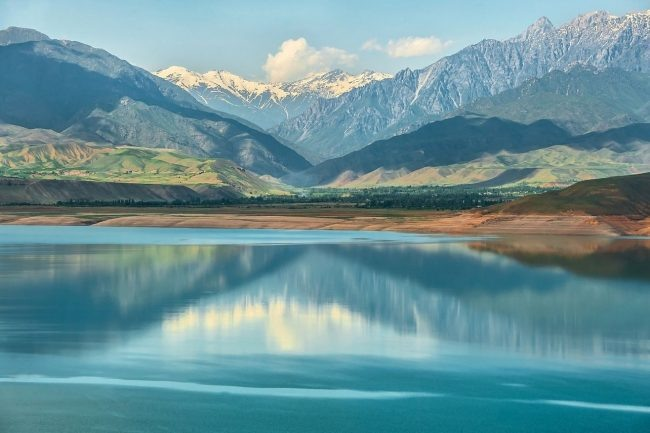

Кыргызская Республика - горная страна, 94,2% ее территории лежит выше 1000 м над уровнем моря,
а 40,8% - выше 3000 м. Средняя высота над уровнем моря - 2750 м, наибольшая высота - 7439 м,
наименьшая высота - 401 м. Громадные амплитуды абсолютных высот, сложный рельеф, длительное
геологическое развитие и другие факторы обусловили разнообразие природных условий, богатство
естественных ресурсов. На территории республики
встречаются все природные зоны, характерные для северного полушария, за исключением тропической.
Чистейший горный воздух, кристально чистые озера, родниковая вода, снежные ве ршины гор, заповедники
– все это природа Кыргызстана.
Кыргызская Республика обладает значительным потенциалом по многим видам природного минерального сырья.
На ее территории геологами выявлено несколько тысяч различных месторождений и рудопроявлений рудных и
нерудных полезных ископаемых.
Сложное длительное геологическое развитие Кыргызского Тянь-Шаня создало благоприятные условия для
формирования месторождений разнообразных видов полезных ископаемых.
В числе основных видов полезных ископаемых золото, ртуть, сурьма, редкоземельные, олово, вольфрам,
уголь, нерудное сырье, подземные воды. Есть перспектива организации добычи железа, титана, ванадия,
алюминия, меди, молибдена, бериллия. Не исключена промышленная значимость тантало-ниобатов, кобальта,
циркония, лития, цветных камней.
Уникальная по своей неповторимой красоте,
разная во все времена года горная природа является главным богатством Кыргызской Республики.
От просторных долин до высокогорных ледников, путешественнику, оказавшемуся
в этой по своему уникальной части Центральной Азии, откроется необычайное
разнообразие ландшафтов и природных достопримечательностей.
Кыргызстан знаменит озером Иссык-Куль – второе по величине
высокогорное озеро в мире, которое часто называют жемчужиной
Центральной Азии. На северном берегу Иссык-Куля расположено самое
большое количество курортов и общественных пляжей, а южный берег
славится своей природой и ущельями.
ПРИРОДА КЫРГЫЗСТАНА УНИКАЛЬНА!Каракол, крупнейший
город Иссык-Кульской области, является отправной точкой для многих походов на некоторые из самых
известных ледников и гор, водопадов. Например, отсюда можно посетить знаменитое ущелье Джети-Огуз,
водопад «Сорок косичек», ущелье Алтын Арашан, горное озеро «Ала куль» -3800 м, Семеновское, Григорьевское
ущелье с водопадами, мертвое озеро «Туздуу кол», горячие радоновые и сероводородные источники и т.д.
ПРИРОДА КЫРГЫЗСТАНА УНИКАЛЬНА!Это целая экосистема: глубокие ущелья с стремительными реками, скалистыми
вершинами, небольшими лесами и широкими высотными пастбищами. Летом эти пастбища усеяны юртами полукочевых
скотоводов, которые приводят сюда своих животных, чтобы они питались сочными горными травами.
ПРИРОДА КЫРГЫЗСТАНА УНИКАЛЬНА!Приглашаем Вас и Ваших родных,
близких посетить первозданные и живописные места Кыргызстана -Ущелье Алтын-Арашан
("Золотой источник") Altyn Arashan, которое находится в 10 км к востоку от г.Каракол
(в 6-7 часах езды от столицы - г. Бишкек). Бурные реки, первозданные горы, хвойные леса,
высокогорные цветы, горячие источники, чистейший воздух, тишина и покой - прекрасное место
для отдыха и лечения!